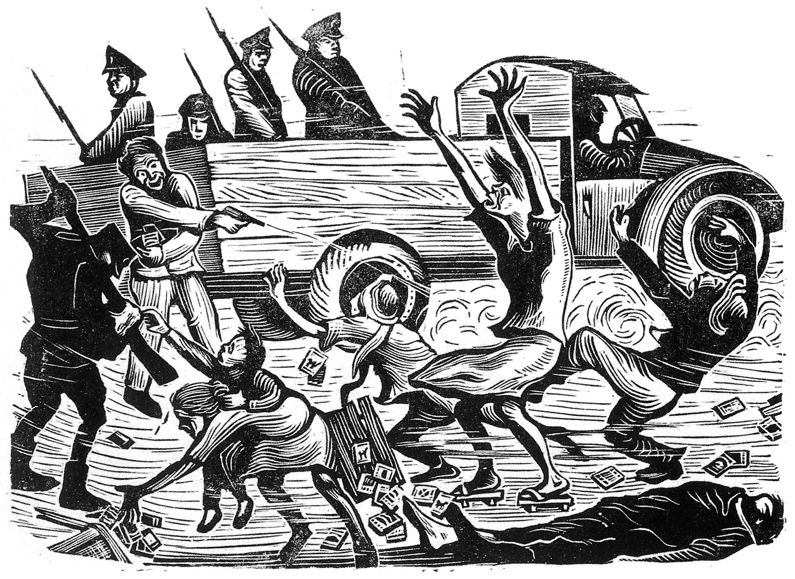

9 / 9 possibilities
Early Immigrants!
Your definition for Taiwanese is people whose family and them came to Taiwan before the Chinese civil war in 1927 that the Chinese Communist Party won.
This definition of Taiwanese often be used synonymously with the word "benshengren", a term which covered both Hokkien and Hakka whose ancestors arrived in Taiwan before the Japanese restrictions on immigration in 1895. "Taiwanese" was used in contrast with "waishengren" (mainlanders), who included the people who followed the lost party in the civil war to Taiwan between 1945 and 1949 and their descendants.
This definition was especially important after an anti-government uprising on February 28 incident happened in Taiwan which was violently suppressed by the Kuomintang(KMT) party led by mostly waishengren who just flee from mainland China after losing the Chinese civil war. Thousands of civilians were killed beginning on February 28, 1947, by the government. The number of deaths from the incident and massacre was estimated to be between 18,000 and 28,000. This is also one of the most important events in Taiwan's modern history and was a critical impetus for the Taiwan independence movement which was mainly fighting against mainlanders and not the current Chinese Communist Party.